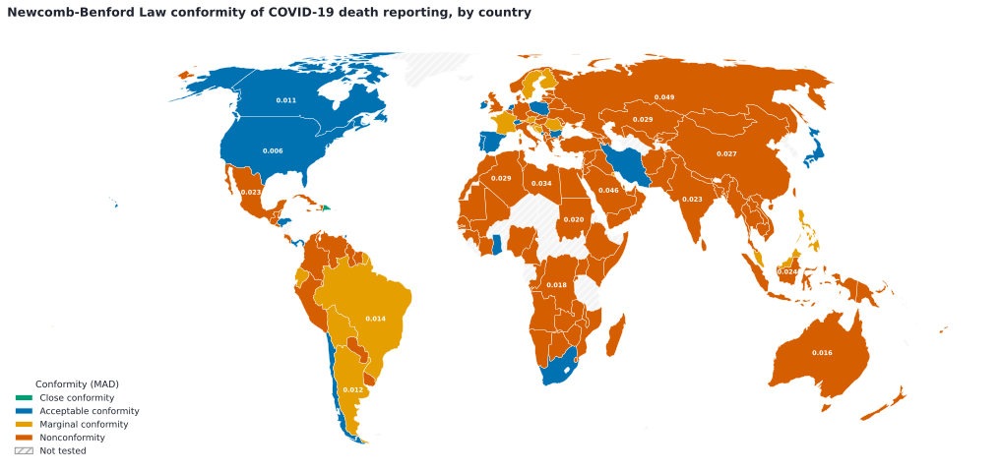
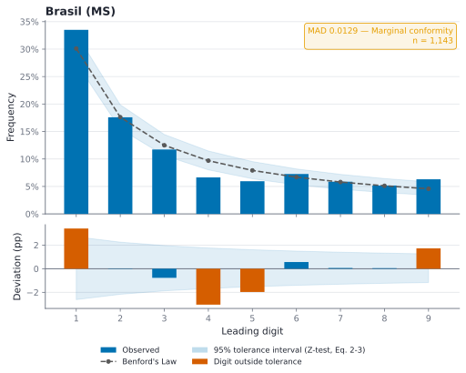
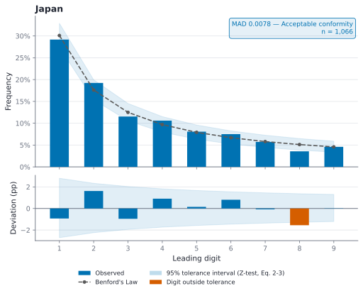

1. Introdução e objetivo
Os números diários de mortes por COVID-19 guiaram leitos, vacinas e isolamento, mas cada país os coletou de um jeito. A Lei de Newcomb-Benford (LNB), usada por auditores para detectar fraudes, prevê como os primeiros dígitos de dados reais se distribuem. Objetivo: testar se os óbitos diários de 146 países seguem essa lei e comparar duas fontes brasileiras.
2. Dados
Johns Hopkins University (195 países, 2020–2023), Ministério da Saúde (1.143 dias), Consórcio de Veículos de Imprensa (1.043 dias) e CDC/EUA (234 semanas). Usou-se a variação diária \(x_t = O_t - O_{t-1}\) dos óbitos acumulados \(O_t\), descartando \(x_t = 0\). A China foi excluída por um salto de ~31 mil para 3,52 milhões de casos em uma semana.
3. Fundamentação matemática
3.1 Origem da lei
Todo \(x \neq 0\) se escreve como \(|x| = S(x)\cdot 10^{k}\), com significando \(S \in [1,10)\) e \(k \in \mathbb{Z}\). O primeiro dígito é \(D_1 = \lfloor S(x) \rfloor\). Se os dados são invariantes à escala (mudar a unidade não altera a distribuição), a mantissa \(\log_{10} S\) é uniforme em \([0,1)\) (Hill, 1995). Logo:
$$P(D_1 = d) = \int_{\log_{10} d}^{\log_{10}(d+1)} \! dt = \log_{10}\!\Big(1+\tfrac{1}{d}\Big)$$Isso dá 30,1% para \(d=1\) e só 4,6% para \(d=9\).
3.2 Teste dígito a dígito
Sob a LNB, a contagem do dígito \(d\) em \(n\) observações é binomial, \(N_d \sim \mathrm{Bin}(n, p_d)\), com \(p_d = \log_{10}(1+1/d)\). A proporção \(\hat p_d = N_d/n\) tem desvio-padrão:
$$\sigma_d = \sqrt{\frac{p_d\,(1-p_d)}{n}}$$Os limites de tolerância de 95%, com correção de continuidade (Henselmann et al., 2012), são:
$$p_d - \Big(1{,}96\,\sigma_d - \tfrac{1}{2n}\Big) \le \hat p_d \le p_d + \Big(1{,}96\,\sigma_d + \tfrac{1}{2n}\Big)$$3.3 Conformidade global
Para resumir os 9 dígitos em um único índice, usa-se o desvio absoluto médio:
$$\mathrm{MAD} = \frac{1}{9}\sum_{d=1}^{9} \big|\hat p_d - p_d\big|$$Diferente do \(\chi^2\), cujo valor cresce com \(n\) e rejeita quase tudo em séries longas, o MAD não depende do tamanho da amostra, o que permite comparar países com séries de tamanhos diferentes (Nigrini, 2012). Faixas: < 0,006 próxima · < 0,012 aceitável · < 0,015 marginal · ≥ 0,015 não conforme.
resolvido
4. Resultados

Aceitável
Marginal
Não conforme


5. Discussão e impacto
- Mesmo país, fontes diferentes, resultados diferentes: os dados do Ministério da Saúde aderem mais à LNB que os do consórcio de imprensa. O método de coleta afeta a qualidade do dado.
- A frequência de notificação importa: EUA semanal (CDC): MAD 0,0159; diário (JHU): 0,0061.
- Ferramenta barata e reproduzível: só dados públicos para indicar onde auditar, inclusive em epidemias futuras.
6. Conclusão
Referências
- Newcomb, S. (1881). Note on the frequency of use of the different digits in natural numbers. Am. J. Math., 4(1).
- Nigrini, M. J. (2012). Benford's Law: Applications for Forensic Accounting, Auditing, and Fraud Detection. Wiley.
- Hill, T. P. (1995). A statistical derivation of the significant-digit law. Stat. Sci., 10(4).
- Henselmann, K., Scherr, E. & Ditter, D. (2012). Applying Benford's Law to individual financial reports: an empirical investigation on the basis of SEC XBRL filings.
- Dong, E., Du, H. & Gardner, L. (2020). An interactive web-based dashboard to track COVID-19 in real time. Lancet Infect. Dis., 20(5).